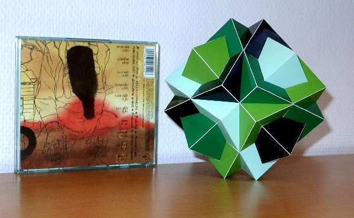

Bakos' Compound

This polyhedron model of Bakos' beautiful compound consists of 4 cubes and the whole compound has the symmetry of one cube. It was published by T.Bakos in 1959. What I like about the model that for each side of a cube the same pieces are needed to build a model. In total you will only need three different kinds of pieces. A template for building this model can be found here.
On the background there is a musix CD from Kelly Joe Phelps called "Sky Like a Broken Clock". At the time of building the model I listened a lot to that CD.
Years after building this model I found a way to put three of Bakos' compounds into one compound of 12 cubes. A model of that polyhedron can be found here
Last Updated
2018-05-21